20 faktiske spelområde i ein vertikal stakk. Start på nivå 01 nedst og klatre opp.
1–17 under bakken · 18–19 første dagslys · 20 sluttboss ved soloppgang
Sjå dei nye romma og landemerka →
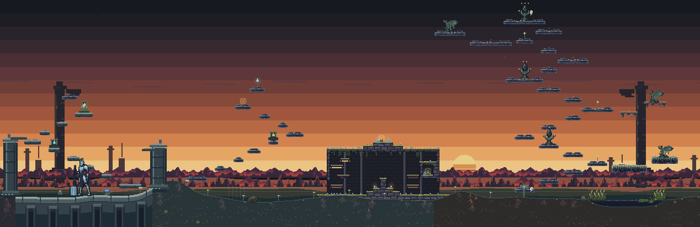
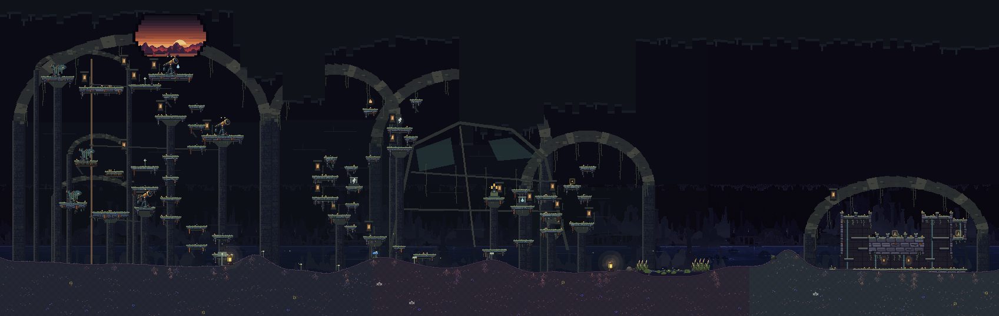
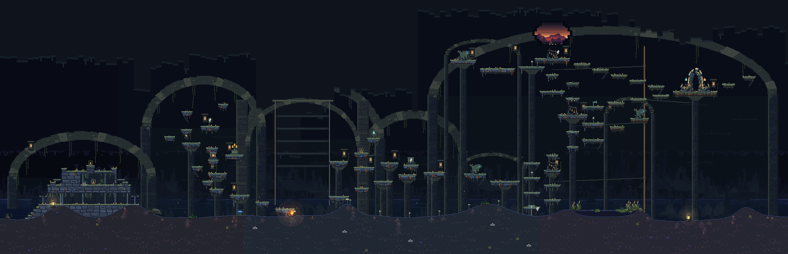
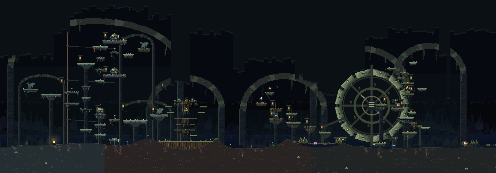
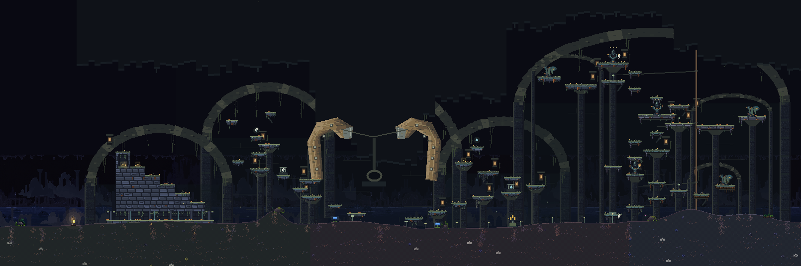
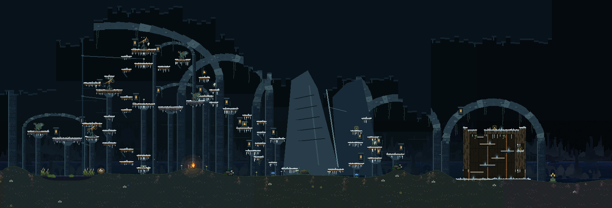
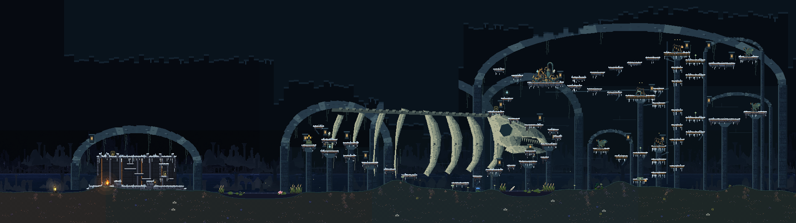
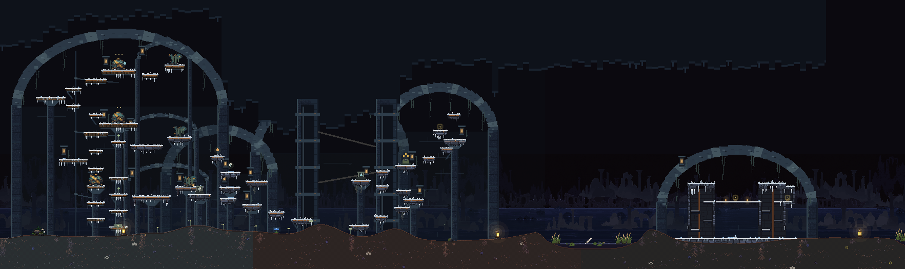
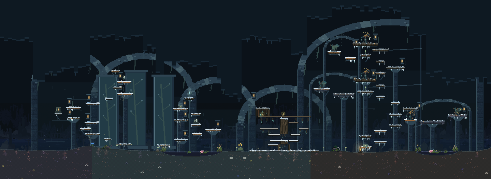
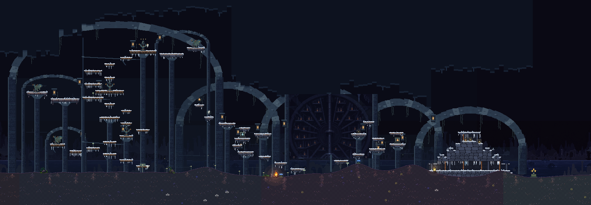
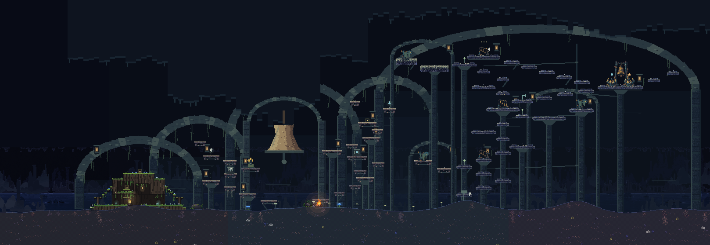
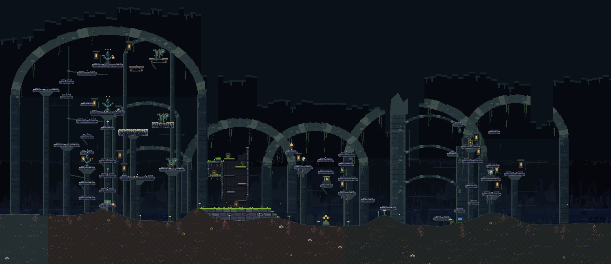
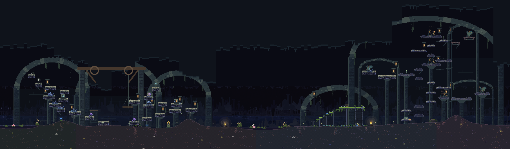
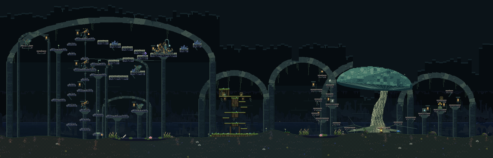
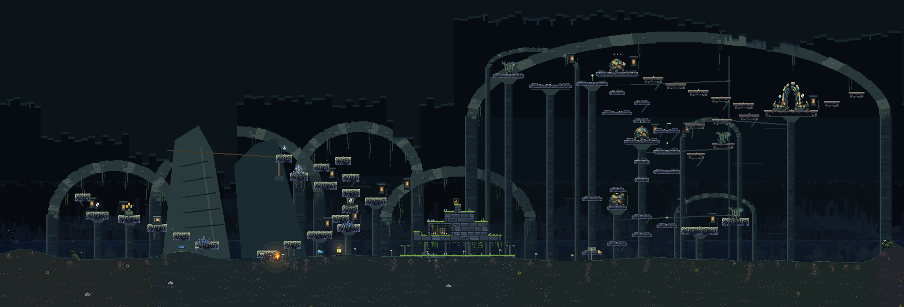
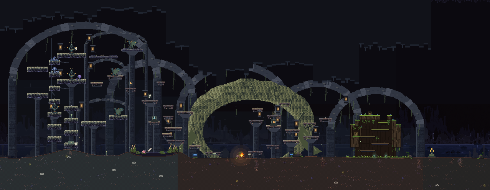
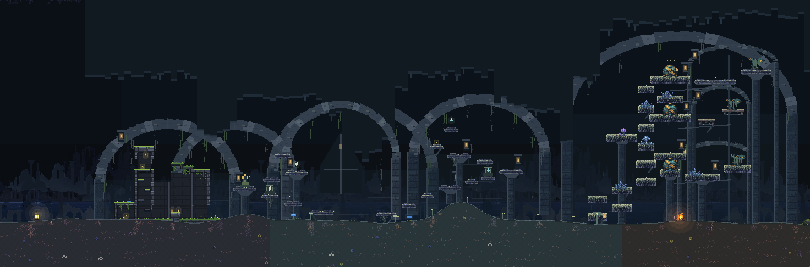
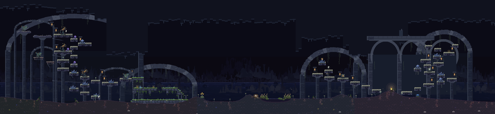
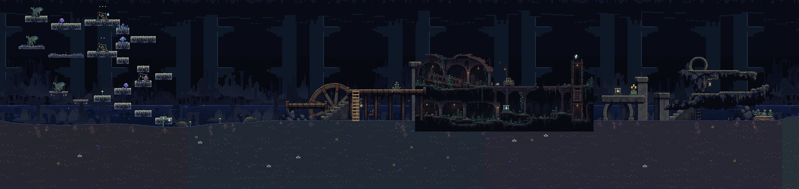
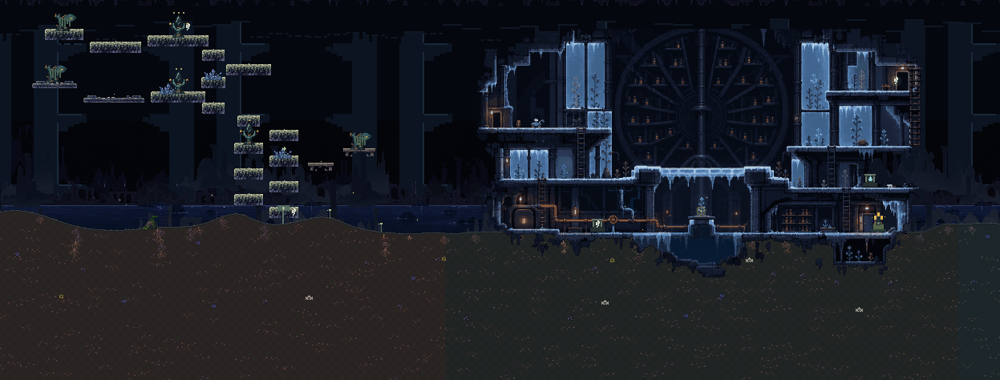